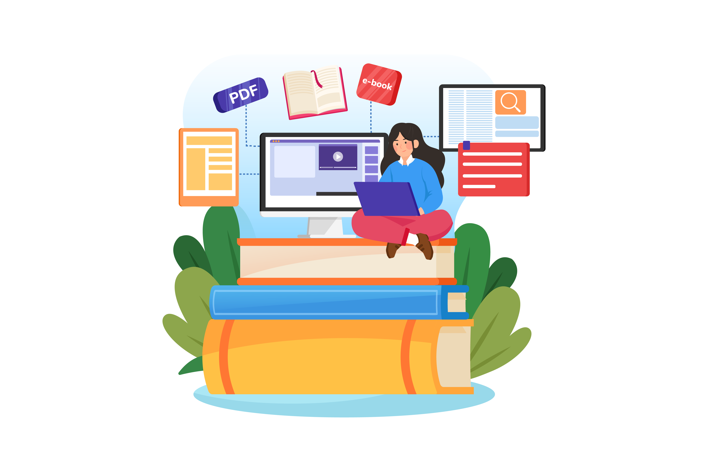

Resources to Help You Repurpose Your Exchange
Knowing where to start is never easy. But we hope our curated
collection of resources will help give you some ideas on what you
can do with your new exchange!
Sewing:25 Must-Learn Basic Sewing Skills For Beginners
Brightly: Six Easy Ways to Upcycle Old Clothes
TheSewingLoftBlog: 100 Scrap Fabric Projects
MindfulOfTheHome: DIY Ideas for Repurposed Clothing
Gathered: Upcycling Clothes Ideas
DIY Everywhere: Don't throw away your old towels. Here are 16
amazing ways to give them new life
